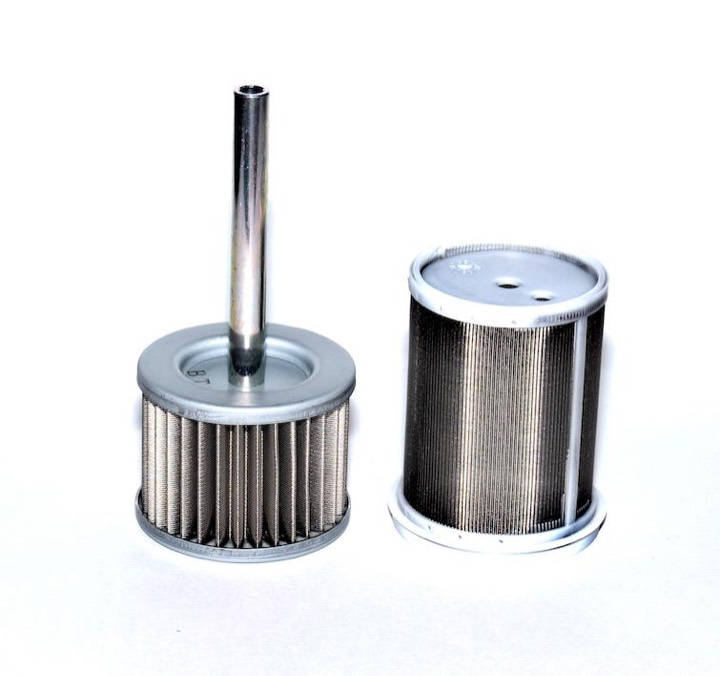

Комплект фильтров моноблока Tatsuno АНАЛОГ
Tatsuno (С-бенч, ТАТСУНО РУС )
Раздел: Фильтры и фильтрующие элементы ТРК · АЗС
Цена и наличие — по запросу. Поставляем оригинал и аналоги. Доставка по России.
Модификации и размеры (2)
- Комплект фильтров моноблока TATSUNO
- Комплект фильтров моноблока Tatsuno АНАЛОГ
Подберём нужный вариант — уточните при запросе.
Описание
Комплект фильтров моноблока Tatsuno АНАЛОГ производства Tatsuno (С-бенч, ТАТСУНО РУС ) — позиция из раздела «Фильтры и фильтрующие элементы ТРК» для АЗС. Компания SYNDICAT поставляет оборудование и комплектующие для автозаправочных и газозаправочных станций по всей России. Цена и наличие «Комплект фильтров моноблока Tatsuno АНАЛОГ» — по запросу: оставьте заявку или позвоните, подберём оригинал или аналог и рассчитаем доставку.